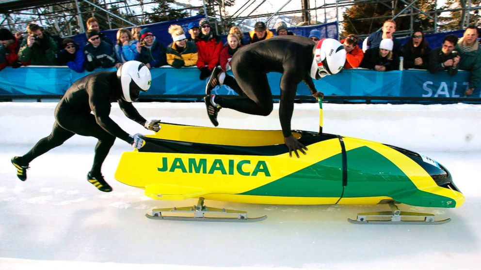
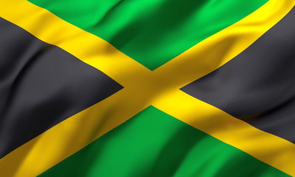
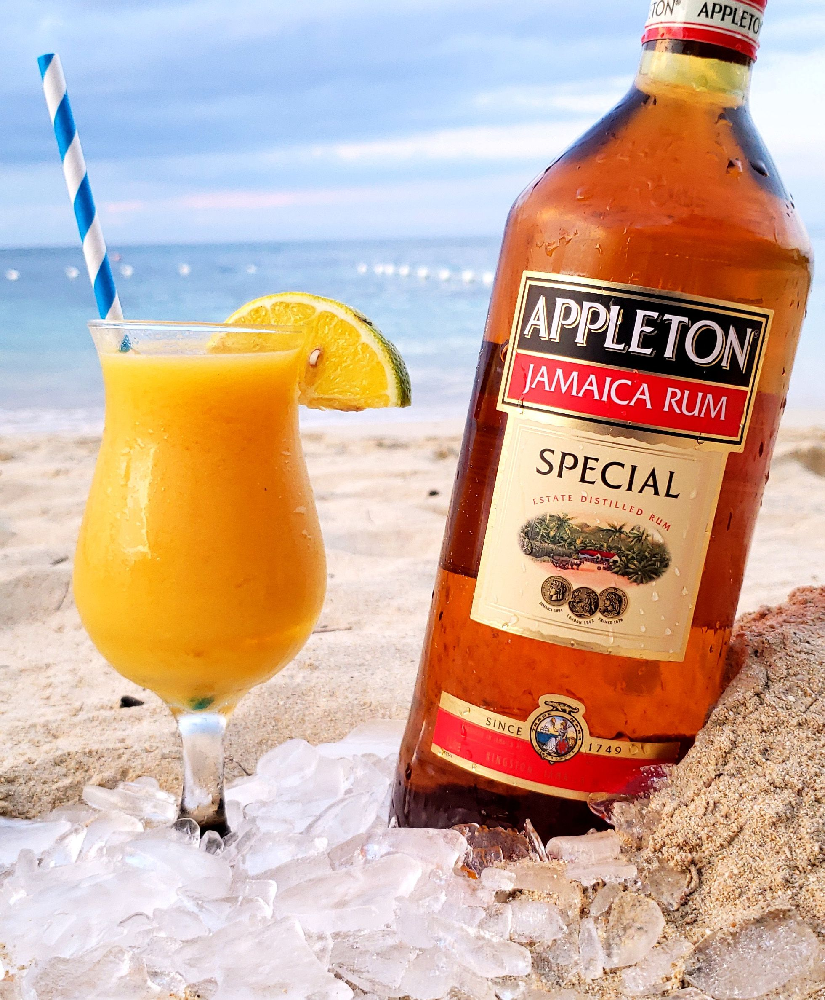

Jamaica was the first Caribbean country to enter the Winter Olympics
No one ever believed that a country like Jamaica, situated in the tropics, would have any interest in participating in the Winter Olympics. That was until the Jamaican National bobsled team represented the country for the first time, at the 1988 Winter Olympic Games in Calgary, Alberta. The team gained recognition for their historical efforts and subsequently, the 1993 movie Cool Running’s was made, inspired by their story.

Jamaica is a multi-racial island
Although the island’s ethnic make-up is predominately of African descent, Jamaica is a culturally diverse country. The population of approximately 3 million people is made up of African, European, East Indian and Chinese heritage. The island’s motto is “Out of Many, One People”, an ode to Jamaica’s multi-racial and multi-cultural history.

In almost every restaurant, bar, and home across the island, you will find a bottle of rum. Rum-making is a centuries-old industry in Jamaica and the rum produced on the island is some of the best in the world. The sweet-tasting Wray & Nephew White Overproof Rum and Appleton Rum, made from sugar cane are local favourites..